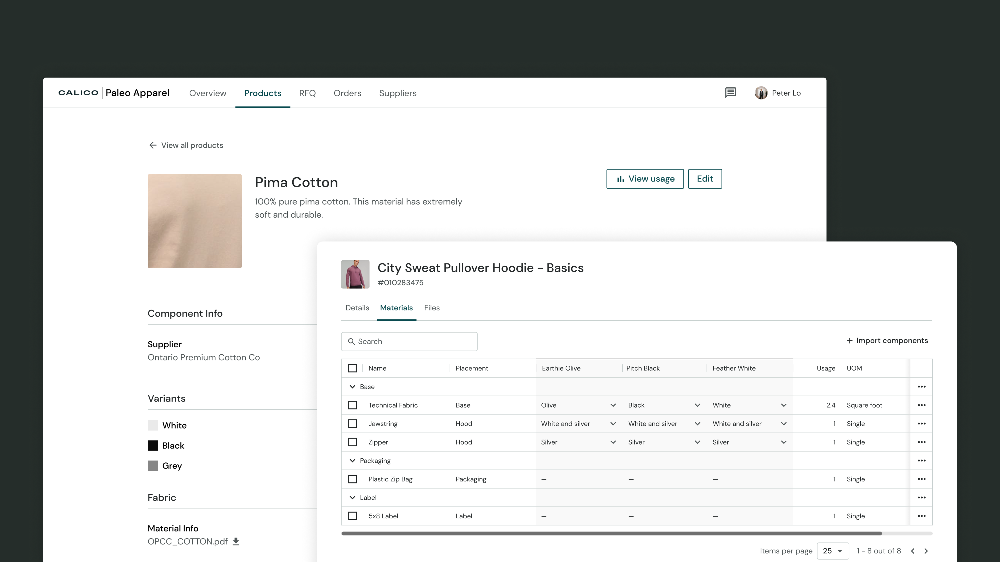
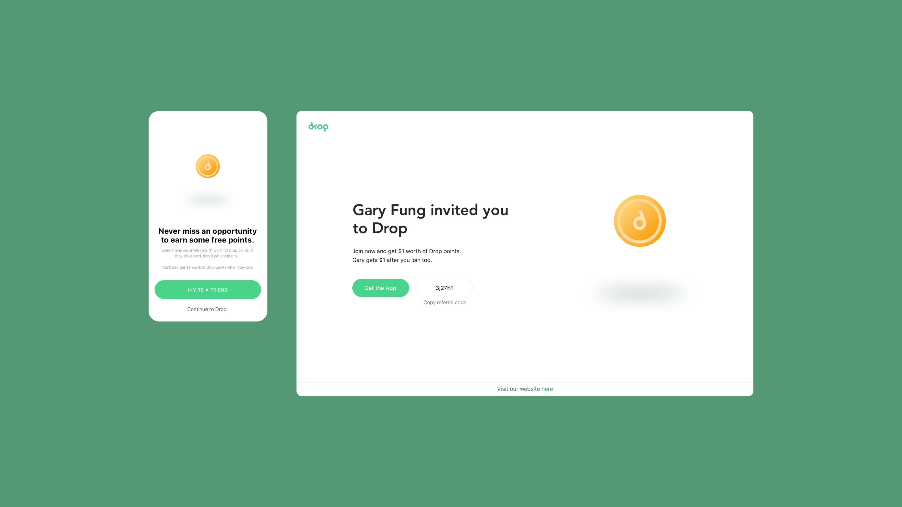
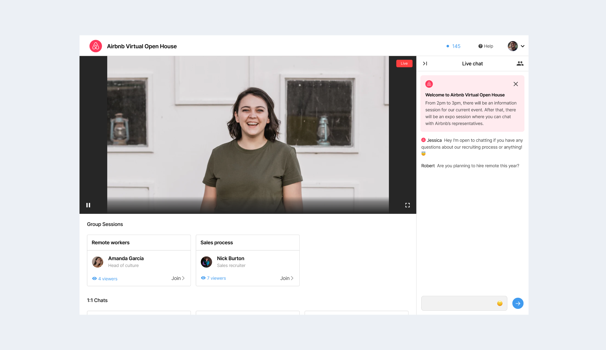
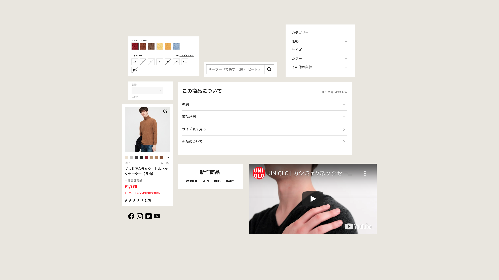

Hello— I’m Gary!
Work
About
Product designer improving people's lives through human-centric design.
Previously at
Calico
, designing products to help fashion brands scale their production operations.

Calico
Empowering fashion brands to track their materials and products
View case study

Drop
Designing a referral program to improve user acqussition
View case study on Medium

Calico
Connecting people and businesses through virtual career fairs with Hellohire
View case study

Calico
Building a Design System for scalable and sustainable growth for Uniqlo
View case study